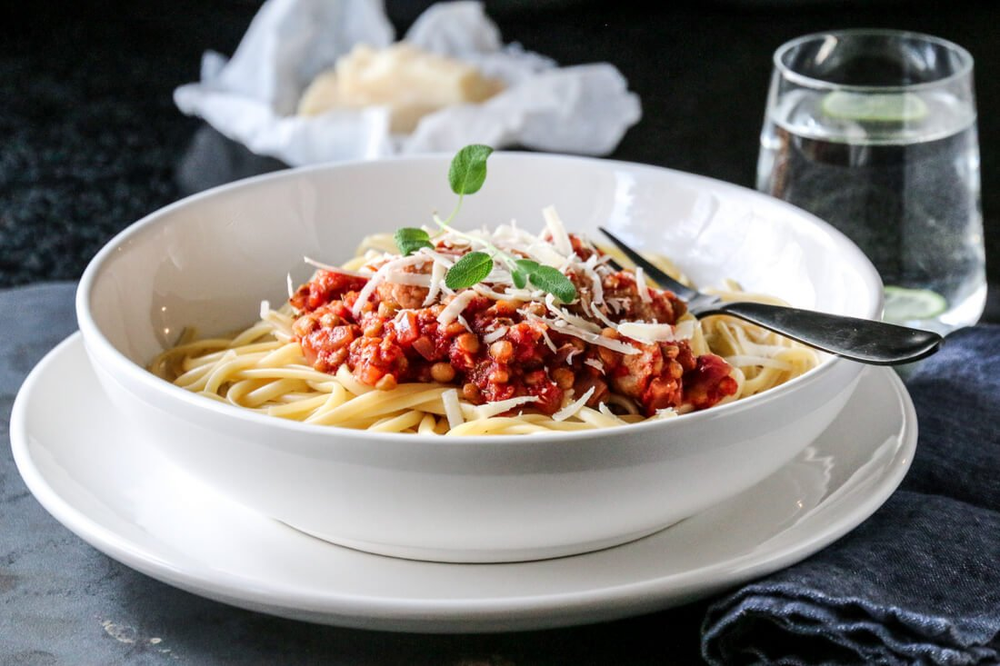

Quick and easy pasta dishes are a blessing on a busy day. One of the ingredients in this tasteful recipe is the ricotta cheese.
Together with spinach, tomatoes, and pasta the dish is simple yet delicious.

recipe here
A delicious all-in-one form dish using salmon, vegetables and sauce,
with pomegranate seeds. Pleasing for taste as well as eyes.
recipe here
A tasty and quick pasta dish with salsiccia, tomatoes, chili, and red lentils.
Salsiccia is an Italian raw, spicy sausage. If you don't have salsiccia,
you can use minced meat of choice instead.

recipe here